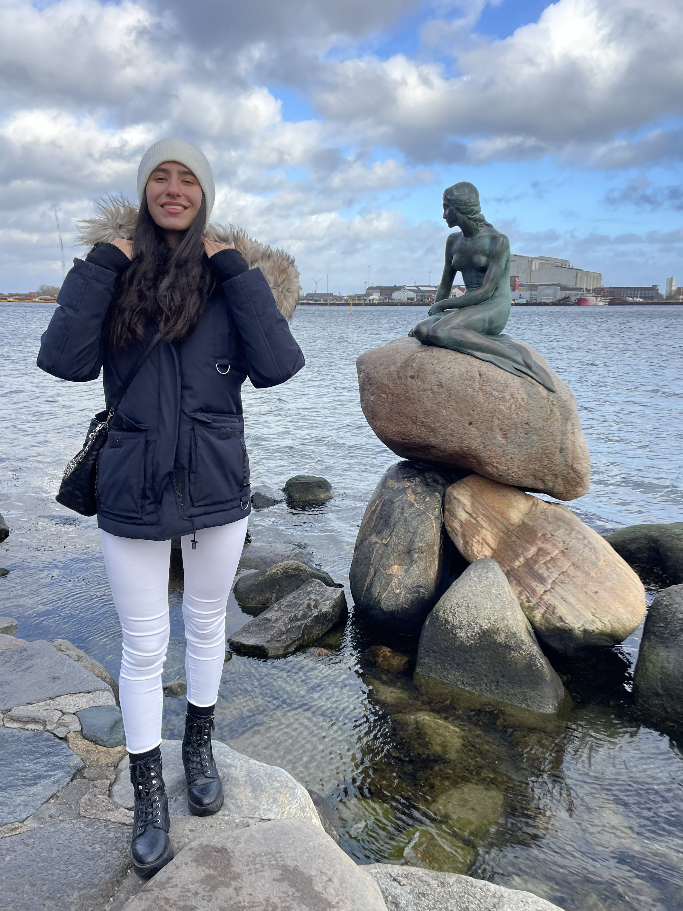
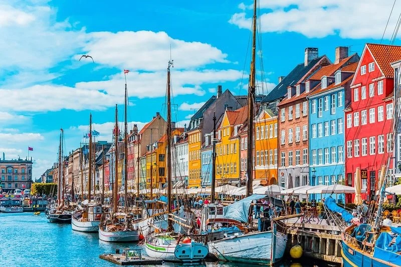

|  |  |
|
קופנהגן היא עיר נמל סקנדינבית צבעונית, עם בתים צבעוניים לאורך התעלות, אווירה רגועה והמון מקומות יפים לעצירה, קפה וצילום. זו עיר שבה אפשר לשלב טיולים ברגל, נסיעה באופניים, אוכל טוב וביקור באזורים שקטים על המים. דברים שאני אוהבת במיוחד בקופנהגן:
|